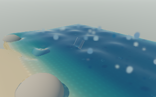

2026-11-10 · Intel Mac / AMD Radeon Pro 560X · Native wgpu / Metal · CPU field physics
Decision: keep both SIMD paths opt-in, off by default. Two-lane double-precision pressure vector operations and reciprocal particle-force accumulation are implemented, with independent live QA checkboxes and the existing scalar fallback. No GPU passes, rendering settings, timestep or material properties were changed.
The edited-scene aggregate moved from 5.29 → 5.38 FPS and 0.706× → 0.718× realtime (1.7%). The second edited pair was effectively tied; this is too small relative to run variation to establish a repeatable improvement. The first calm pair moved 6.57 → 6.63 FPS. A second calm SIMD run fell to 5.61 FPS; its matching scalar run stopped on a window-surface error and is excluded. Do not claim a general SIMD speedup from these measurements.
640 × 400 native window, fixed 320 × 200 scene rendering, resolution 1.4, 3,024 water markers, 60 FPS cap, simulation speed 1. Each run uses the ordinary application loop and its existing one-frame-in-flight guard. 96 frames, first 16 discarded; FPS and realtime use the 79 subsequent wall-clock intervals, including UI, simulation, GPU work and presentation. Runs are sequential in scalar/SIMD/SIMD/scalar order within each workload. Cold startup is excluded.
| Workload | Path / repeat | FPS | Realtime | p95 frame interval | Raw evidence |
|---|---|---|---|---|---|
| calm | Scalar a | 6.57 | 0.876× | 183.0 ms | complete |
| calm | SIMD a | 6.63 | 0.879× | 179.6 ms | complete |
| calm | SIMD b | 5.61 | 0.748× | 212.6 ms | complete |
| calm | Scalar b | 5.90 | 0.787× | 196.1 ms | excluded — surface error |
| edited | Scalar a | 5.20 | 0.693× | 222.2 ms | complete |
| edited | SIMD a | 5.37 | 0.716× | 214.2 ms | complete |
| edited | SIMD b | 5.39 | 0.719× | 215.1 ms | complete |
| edited | Scalar b | 5.39 | 0.719× | 219.6 ms | complete |
Calm: zero wind, no rain, tides and lunar progression disabled. Edited: wind 12 m/s, 144 grab/place operations before playback. Edit consolidation leaves eight initial sand parcels; these results cover repeated editing, not a large forest of raised/carved sculptures. No running browser graphics test competed with the native runs. RTX/Windows measurements remain open.
The pressure trial groups two f64 vector values while retaining scalar reduction order and odd-length tails. The particle trial groups x/y reciprocal gradient and force accumulation without changing pair order; z and branching contact queries stay scalar. All masks, held markers, carved contacts and momentum reciprocity remain intact. These are small kernels in a workload still dominated by other CPU work and rendering/waits.
The CPU-only alternating kernel benchmark ranged from a 5% pressure regression on the smaller fixture to an 8% gain on the larger fixture; density gains were 1–3%. Those figures are not FPS. A future SIMD pass should first establish a substantial hotspot with contiguous batches; sparse gathers and branch-heavy contact traversal need a different layout before wider arithmetic is likely to help. AssemblyScript SIMD intrinsics and V8 WebAssembly SIMD were the implementation references.
55 focused tests passed. Scalar and SIMD results are bit-identical for pressure potentials/iterations, reciprocal density constraints, held markers, tilted cups, carved wet sand, player contacts and 32 full CPU steps spanning edits, moving bodies, toggling and reset. Both web and native builds passed. Failed/unsupported SIMD compilation retains the existing scalar kernel.
The final offscreen native check exercised both real UI checkboxes, ran 12 SIMD physics steps with edits and a glass cup, then compared frozen full-scene renders. Mean and maximum linear RGB difference were both zero; all pixels were finite. Image-check data.

320 × 200 scene capture, enlarged here. This is the existing renderer, not a reduced SIMD renderer.
The second calm scalar run stopped after 76 frames with Invalid Surface Status from native window image acquisition, after the existing single reconfiguration attempt. It did not reach the required 96 frames and contributes no aggregate result. This is a native presentation failure, not evidence of a SIMD arithmetic or shader failure; the guard stopped submissions. Its raw report conservatively marks the renderer failed. No machine/browser restart was requested. The final parity check used the existing offscreen path to avoid that window-surface failure mode.
Summary and exact settings · Reproduction commands are in native/README.md. Historical snapshots and saved terrain are unchanged.